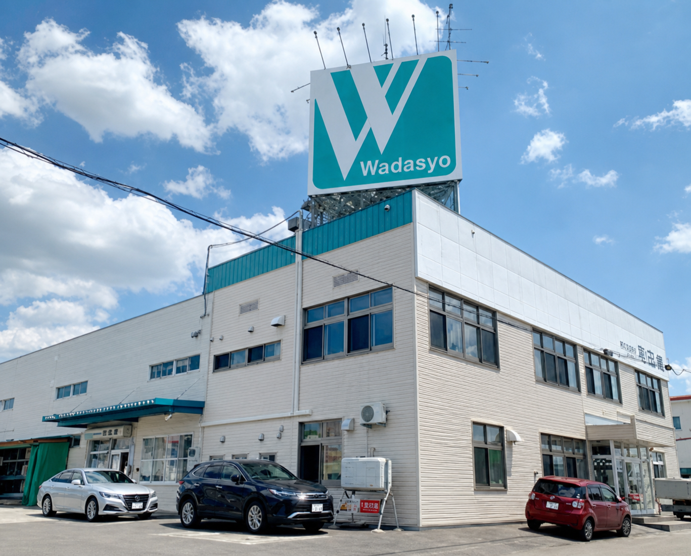

旭川から、プロのものづくりを支える
SUPPORTING PROFESSIONAL CRAFTSMEN
豊かな暮らしを支えるものづくりを応援します。
北海道旭川より、豊かな地域生活を支えるプロフェッショナルな職人さんを応援します！
OUR PRODUCTS
現場の用途から、必要な商品へ。
建築・土木総合資材、仮設資材、住宅機器、金物、作業工具を取り扱っています。

NEWS
 CONTACTお問い合わせ
CONTACTお問い合わせ

旭川から、プロのものづくりを支える
SUPPORTING PROFESSIONAL CRAFTSMEN
北海道旭川より、豊かな地域生活を支えるプロフェッショナルな職人さんを応援します！
OUR PRODUCTS
建築・土木総合資材、仮設資材、住宅機器、金物、作業工具を取り扱っています。
NEWS